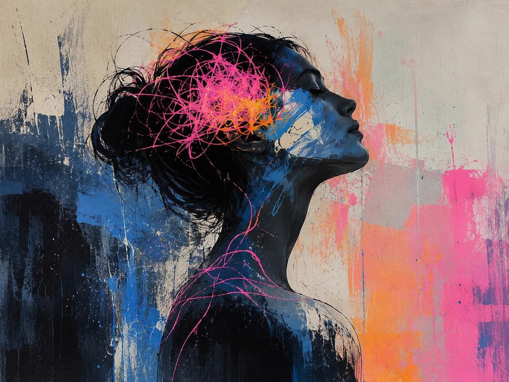

Непрожитые эмоции не исчезают — они находят выход через тело. Этот маршрут о том, как услышать сигналы симптомов и вернуть себе телесную опору.
Обследования в норме, а тело продолжает сигналить. Психосоматика помогает найти эмоциональный корень.
Зажимы, головные боли, проблемы со сном в напряжённые периоды — разбираем механизм и учимся его останавливать.
Тело как «транспорт для головы». Практики возвращают чувствительность и умение слышать себя раньше, чем заболит.
Система не разбрасывает внимание: основная программа задаёт глубину, дополнительная — поддерживает. AI-помощник поможет выбрать, с чего начать.
Связь эмоций, стресса и телесных симптомов. Разборы реальных случаев и психодраматические техники работы с симптомом.
Открыть в Системе ДополнительнаяПрактики, которые возвращают внимание в тело: заземление, дыхание, работа с напряжением.
Открыть в СистемеМаршрут «Тело и симптомы» появится на главном экране: следующий шаг всегда перед глазами, без поиска по библиотеке.
Знает каждый урок направления: объяснит сложное место, ответит на вопрос по материалу и подскажет практику под состояние.
Медитации, марафоны и общий чат поддерживают ритм — путь легче, когда рядом живые люди.
Регистрация занимает минуту. Система соберёт первый шаг — останется только начать.